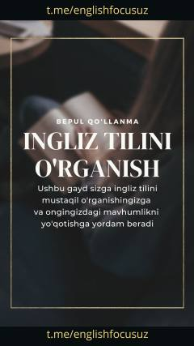

ITIngliz tilini mustaqil va tizimli oʻrganish boʻyicha bosqichma-bosqich qoʻllanma.
Ushbu qoʻllanma ingliz tilini mustaqil ravishda oʻrganishni istovchilar uchun moʻljallangan amaliy yoʻriqnomadir. Unda til oʻrganish darajasini aniqlash, kerakli adabiyot va resurslarni tanlash hamda kunlik reja tuzish boʻyicha bosqichma-bosqich tavsiyalar berilgan. Shuningdek, oʻquvchilarga foydali onlayn testlar va soʻz boyligini tekshirish uchun manbalar taqdim etiladi.